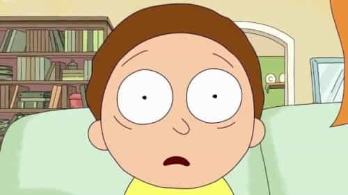
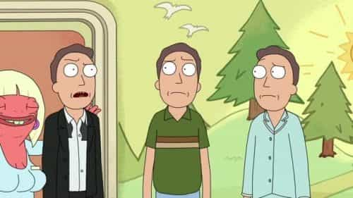

Jared is a middle-aged guy full of old-man wisdom. He's best described as a gentlemen scholar and a man among men. You can read his writing at his site: Legends of Men


Dan Harmon, a co-creator of the very successful adult cartoon Rick and Morty, is in some heat lately because of a tasteless comedic sketch he filmed some time ago. It’s pretty disgusting, and a result of the fact that he didn’t have an alpha father.
Hopefully the sketch was nothing more than being a beta comedy writer. For decades, comedians have been telling each other the Aristocrats joke. It’s a stupid joke only valued for it shocking, improvised nature. Harmon, as a comedy writer, probably tried to impress his comedian friends with a shocking sketch. It’s still horrible, but more than anything, it demonstrates that nobody ever taught him how respectable men behave in society.
More than that, Harmon and crew clearly yearn for an alpha male father figure. This is evident to those who watch Rick and Morty and are willing to do some armchair psychology.
To give my argument legitimacy, I must first establish that the show’s creators are beta. Fortunately, I have some evidence for that.
Years ago while Harmon was the head writer for the show Community, he got a boner for one of the female writers that worked for him, Megan Ganz. Megan rejected him and he hated her for it. That hatred continued well into his 30s.
Dan Harmon and Megan Ganz
Harmon felt like he was cruel to her for the rejection, despite employing her as a writer for a successful show. He said that if she wanted to be treated only as a writer that he would do just that. It appears from his written and spoken words (which can be read in this Time article) that his idea of treating her cruelly was actually treating her like a professional. He goes into no more specifics than that. Eventually, he apologized to her publicly and privately.
The fact that he needs to virtue signal, call himself a feminist, and take the rejection so personally all signal that he is a complete beta male. But it’s not just Harmon. He and the other co-creator made a conscious effort to hire more female writers to write the third season of Rick and Morty. They say that having a gender-balanced writing room made the third season that much better.
The women may not have hurt the show, but to say it needed more female writers despite the fact that it was such a success without them point to beta feminist virtue-signaling.

Morty is the 14-year-old boy at the center of the show. He goes on sci-fi adventures to alternate dimensions with his grandpa Rick. During the course of the show, he gains more competence, confidence, and understanding. In short, by spending more time with Rick, he becomes more masculine.

Rick is the Smartest man in the universe and Morty’s maternal grandfather. He’s competent in just about every way. Moreover, he acts like a strong man. He’s always confident. He’s (almost) always calm and collected. He scores the hottest women. His only flaw is that his supreme intelligence has lead him to nihilism, but in the course of the show he grows to be more caring of his family and thus a more complete man.

Jerry is Morty’s father and the epitome of a beta male. He’s a coward, not just to strangers but to his own wife and children. He’s incompetent at his job and just about everything that he does. He’s weak. He’s lazy. He’s selfish, even willing to risk his kids’ lives more than he is to man up (so to speak). Even his own daughter at one point calls him a beta-male sexist. He has almost no redeemable qualities. Also, in one episode he is homosexual.
At the beginning of the series, Morty is like Jerry, afraid and incompetent. Through his adventures with Rick, Morty grows in all metrics of manhood. Morty is a representation of the creators (and perhaps some male writers) at age 14. Jerry is a representation of the creators and writers as adult men. Rick is the man they all wish they could be and the man they wished had raised them.
Rick is clearly an aspirational figure to anyone who has seen the show. Other characters acknowledge him as a living god. He’s cool. Because of his talents, he is free, freer than any man can ever truly be. If he wants something he goes to another dimension and takes it. If he is tired of something he goes to another dimension to avoid it. What man wouldn’t want to be Rick?
So the creators of the show made a character they wish had raised them and contrasted that with a miserable character that is essentially their view of themselves. It’s a hilarious dynamic and I won’t hide the fact that I think the show is funny and well written.
I draw a direct correlation between the beta tendencies of the show’s creators and their inability to present themselves as respectable men to society at large. Patton Oswalt and Michael Ian Black fall into this same trap, I suspect. Both defended Disney director James Gunn’s horrific tweets. I believe they did this because they’re both soy boys (watch Michael Ian Black’s stand-up and tell me you don’t think that he pleasures men through glory holes) just like Harmon. As such, they don’t know that child abuse jokes are tasteless and inappropriate.
Unlike Gunn, who has been connected with a known owner of child pornography, Harmon seems to be more of the tragic, beta soy boy type who doesn’t know how men behave because a masculine man never raised him.
For more from Jared Trueheart on the roles of men and women in literature and film check out his writing at Legends of Men.
Read More: “Rick & Morty” Shows The Utter Hopelessness Of Modern America